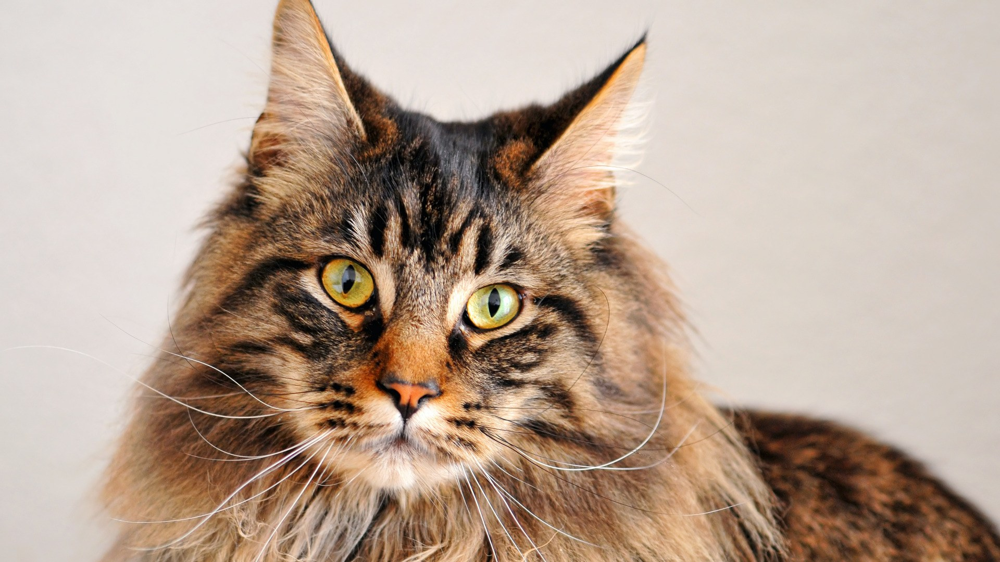
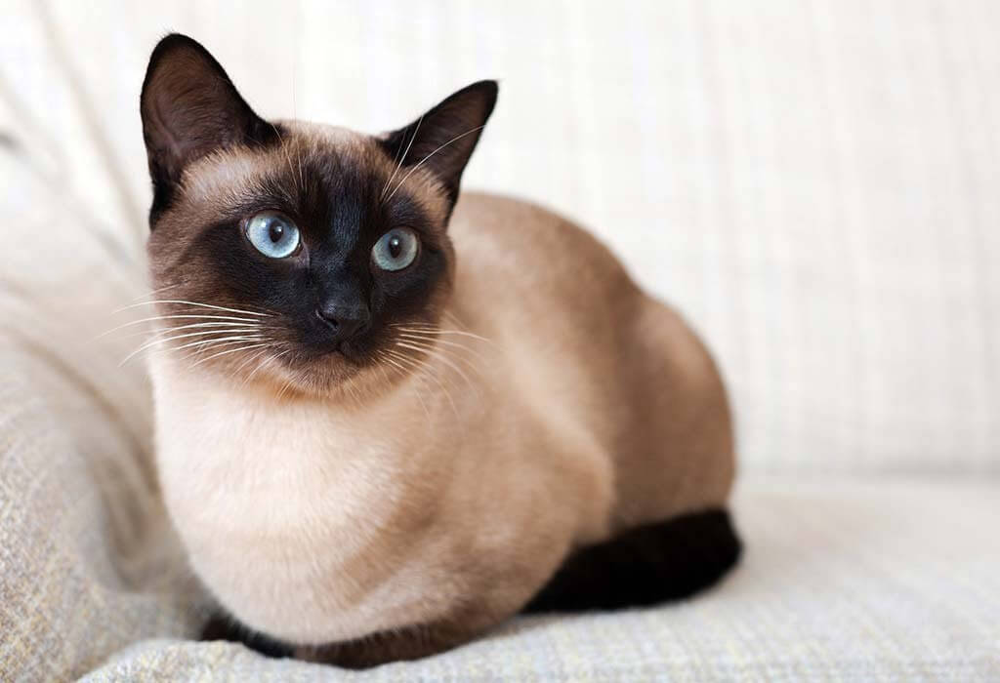
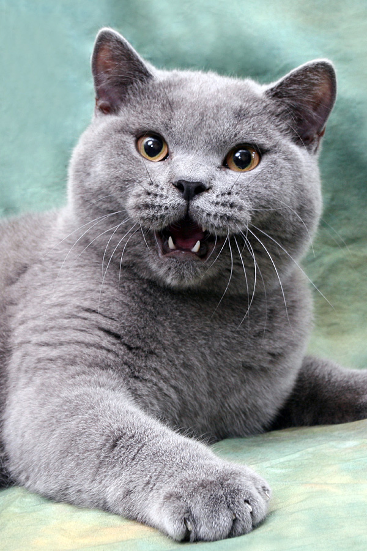
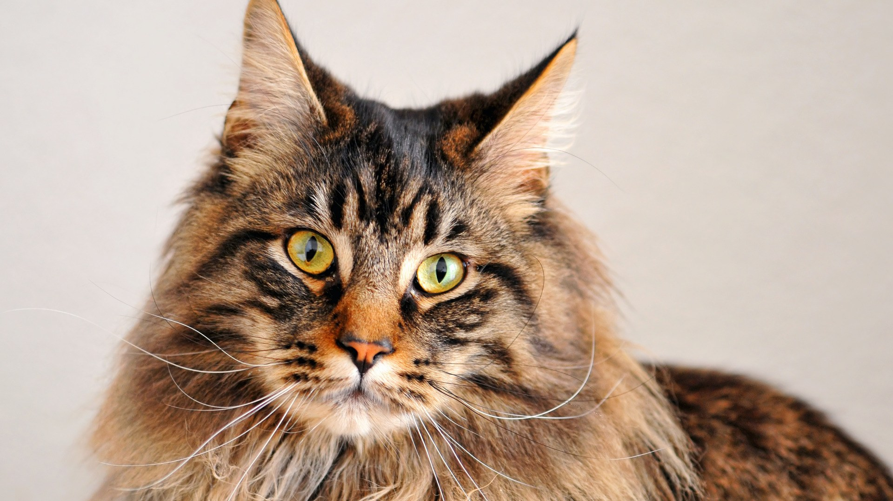
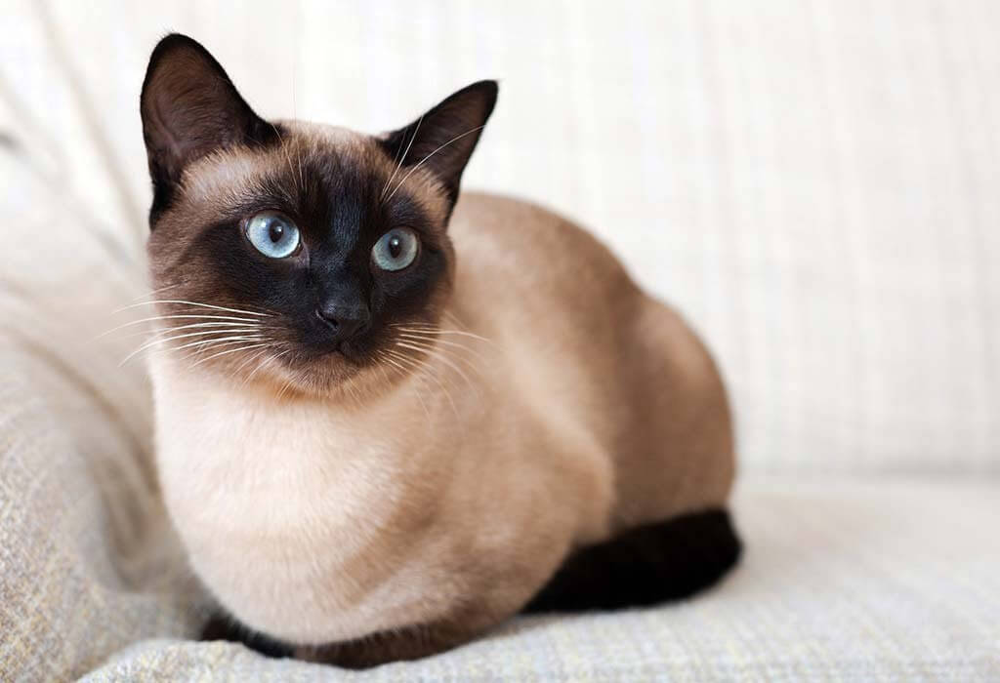
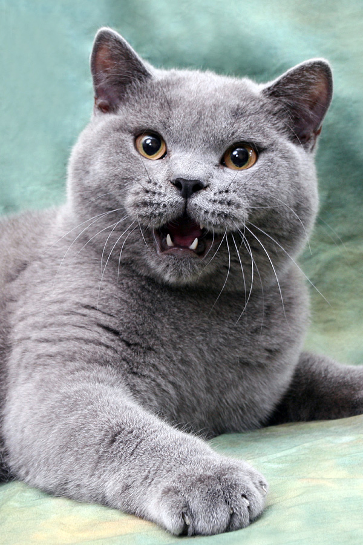

Размышления о котиках
Существует много вещей, которые безразличны людям, но кошки - это то, от чего мы все без ума.
Предлагаем ознакомиться с нашими чудесными пипками!

Существует много вещей, которые безразличны людям, но кошки - это то, от чего мы все без ума.
Предлагаем ознакомиться с нашими чудесными пипками!
 




